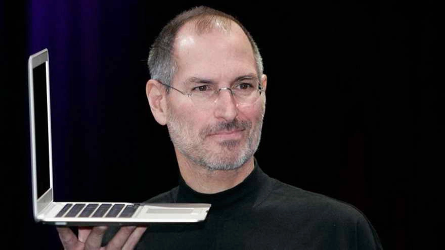

Tribute to Steve Jobs

"The people who are crazy enough to think they can change the world are the ones who do"
TIMELINE
-
Feb 24, 1995 Steve Paul Jobs is born in San Francisco to Joanne Carole Schielble and Abdulfattah Jandali. The then un-married couple gives up their son to adoption. Paul and Clara Jobs become Job's non-biological parents.
-
1961 The Jobs family moves to Mountain View, Calif., part of what would later be known as Silicon Valley
-
August 9, 2011 Apple shares edge past those of Exxon Mobil to become the most valuable U.S company, in terms of market capitalization, at $377.16 billion.
-
August 11, 2011 Resigns from Apple CEO post; becomes chairman